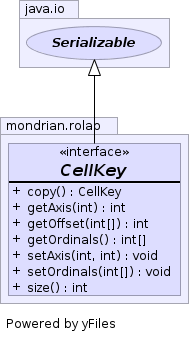

public interface CellKey extends Serializable
CellKey is used as a key in maps which access cells by their
position.
CellKey is also used within
SparseSegmentDataset to store values within
aggregations.
It is important that CellKey is memory-efficient, and that the
Object.hashCode() and Object.equals(java.lang.Object) methods are extremely
efficient. There are particular implementations for the most likely cases
where the number of axes is 1, 2, 3 and 4 as well as a general
implementation.
To create a key, call the
CellKey.Generator.newCellKey(int[]) method.

| Modifier and Type | Interface and Description |
|---|---|
static class |
CellKey.Four |
static class |
CellKey.Generator |
static class |
CellKey.Many |
static class |
CellKey.One |
static class |
CellKey.Three |
static class |
CellKey.Two |
static class |
CellKey.Zero |
| Modifier and Type | Method and Description |
|---|---|
CellKey |
copy()
Returns a mutable copy of this CellKey.
|
int |
getAxis(int axis)
Returns the
axisth axis value. |
int |
getOffset(int[] axisMultipliers)
Returns the offset of the cell in a raster-scan order.
|
int[] |
getOrdinals()
Returns the axis keys as an array.
|
void |
setAxis(int axis,
int value)
Sets a given axis.
|
void |
setOrdinals(int[] pos)
This method make a copy of the int array parameter.
|
int |
size()
Returns the number of axes.
|
int size()
int[] getOrdinals()
Note: caller should treat the array as immutable. If the contents of the array are modified, behavior is unspecified.
void setOrdinals(int[] pos)
pos - Array of axis keysint getAxis(int axis)
axisth axis value.ArrayIndexOutOfBoundsException - if axis is out of rangeaxis - Axis ordinalaxisth axisvoid setAxis(int axis, int value)
RuntimeException - if axis parameter is larger than size()axis - Axis ordinalvalue - Valueint getOffset(int[] axisMultipliers)
For example, if the axes have lengths {2, 5, 10} then cell (2, 3, 4) has offset
(2 * mulitiplers[0]) + (3 * multipliers[1]) + (4 * multipliers[2])
= (2 * 50) + (3 * 10) + (4 * 1)
= 134
The multipliers are the product of the lengths of all later axes, in this case (50, 10, 1).
axisMultipliers - For each axis, the product of the lengths of later
axes